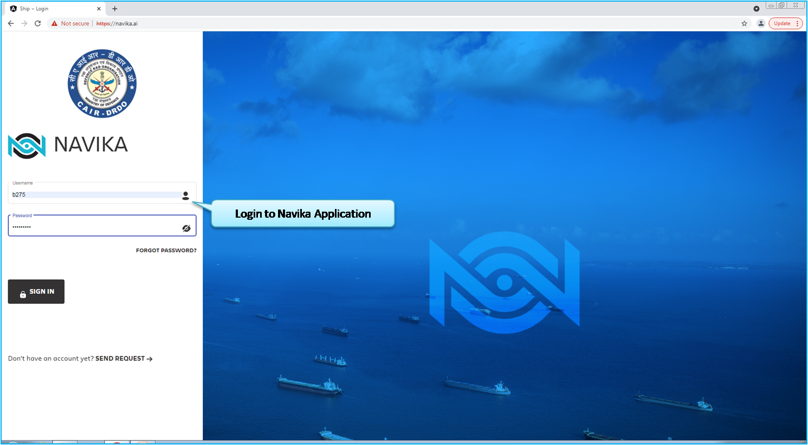
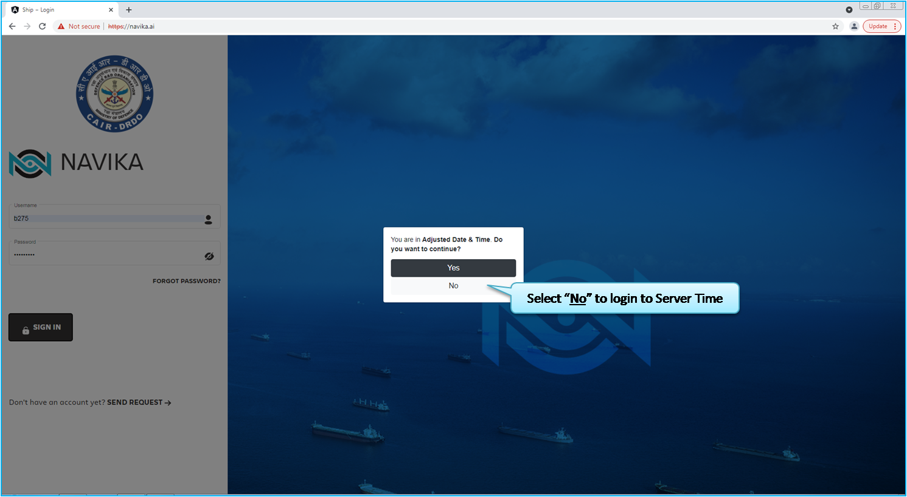
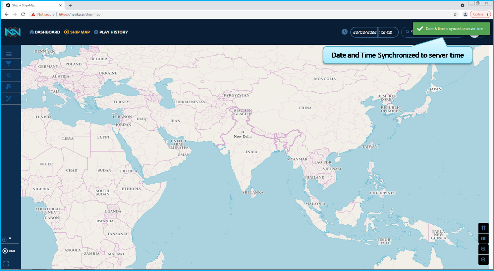
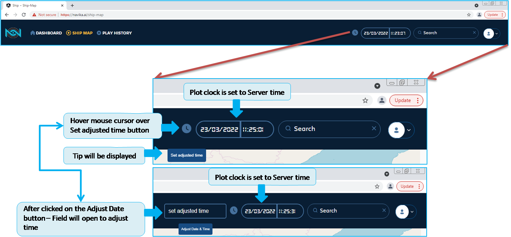
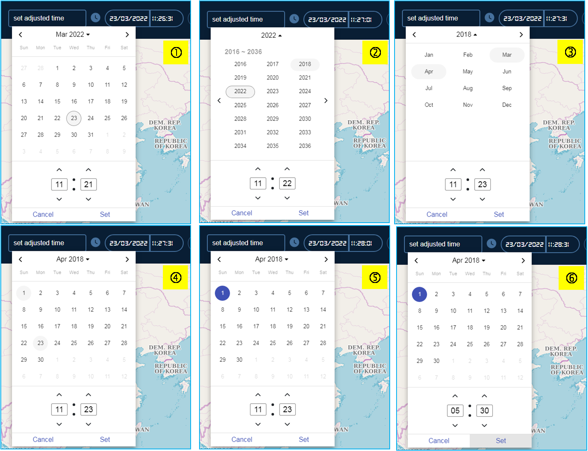
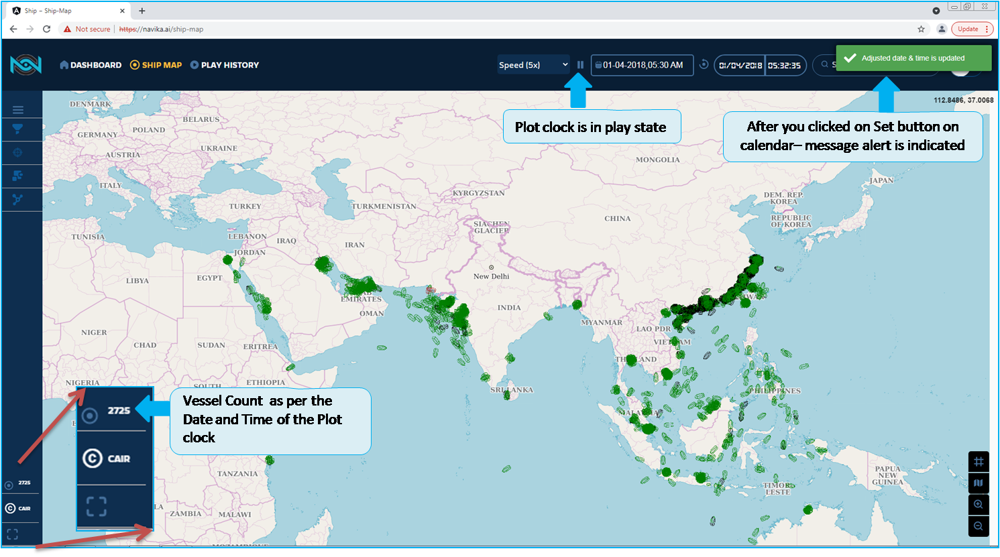
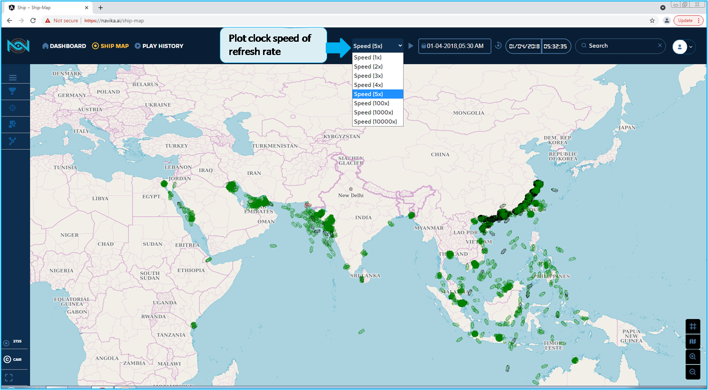

Adjusted Date and Time¶
Modern operating systems distinguish between the following two types of clocks:
A real-time clock (RTC), commonly referred to as a hardware clock, (typically an integrated circuit on the system board) that is completely independent of the current state of the operating system and runs even when the computer is shut down.
A system clock, also known as a software clock, that is maintained by the kernel and its initial value is based on the real-time clock. Once the system is booted and the system clock is initialized, the system clock is completely independent of the real-time clock.
The system time is always kept in Coordinated Universal Time (UTC) and converted in applications to local time as needed.
Local time is the actual time in your current time zone, taking into account daylight saving time (DST). The real-time clock can use either UTC or local time. UTC is recommended.
Adjusted Date and Time is one of feature which has an option for you set the date and time. This is to plot the ships for the date and time set.
Further in the chapter it will be explained complete detail how an adjusted date and time function is implied and database is extracted as per the date and time.
To understand Ajusted date and time, let us explain the analogy of the Banking application is used to analyse and track our financial expenses are done.
To check and view the transaction data or information for the historical date and time, which can be selected by you.
As an account holder you have been provided with option to check the transacted from the day of bank account activation and until current date.
Purchasing, salary debited, Insurance payments, Loan EMI payment and many other types of transactions.
To do spend analysis, your banking application will have an option for you to provide the Account Statement details by providing the input period as from date and to date.
As your are aware of Bank_account_statement for your understanding.
To view and download your transactions, by this you can analyse your spending and income transactions.
That your historical data of financial tracking and find out any wrongly amount as debited.
Analyse what are materials purchased in the year-to-year comparisons can be done
After setting the date and time, allows you to retrieve historical positions.
Both the ship and time period are defined, by giving you the flexibility to query any number of ships at various periods of time.
So now will explain about the same method in the Navika application an option to analyse this historical data,
Data available for the current calendar date up until the time of your selection. You can set date and time by using a feature – Adjusted date and time.
Once you login to the Navika applications, as indicated in the Fig. 92. You will get an opiton to login either Adjusted Date and Time, kindly select the No option. We will guide through this section how to adjust the Date and Time to plot the historical AIS data, As indicated in the Fig. 93
Fig. 92 Adjusted Date Time Navika_Login_page¶
After typing your credentials, you view a pop-up stating to login either in Adjusted Date & Time or in Server Date and Time. Once confirm by Selecting No , it will redirecting to Login page with Date and Time of Server and since there is no data for application to plot the ships in the server date and time.
Fig. 93 Adjusted_Date_Time-No-to-continue¶
In the Fig. 94 indicate that alert message Navika application is Sync to Server Time.
Fig. 94 Date and Time Sync to server time¶
You are seeing the enlarged and projected navigation Bar in which you can set the Date and time, you can observe that plot clock is default set to Server time. In the Fig. 95
Fig. 95 Hover over Adjust time button¶
Adjust Date and Time as indicated in the Fig. 96
Fig. 96 Adjusted Date Time Calender Setting¶
The following steps to set the date and time.
Click on Adjust date and time field.
Select the year you wish to set.
Select the month.
Select the Day/Date.
Click on the Date, it will be highlighted.
Change the Time in 24 hours format and click on the set button to apply
After you have set adjusted Date and Time and apply set button, The plot clock will changed to Adjusted Date and time, and plot clock by default is in play mode. As indicated in the Fig. 97 also the speed is set to 5X, as indicated in the Fig. 98 but it was due to previous setting applied, which was stored in your account and retain to the 5X speed.
Fig. 97 Adjusted_Date_Time-Alert-message-for-setting applied¶
Plot clock speed
Fig. 98 Adjusted_Date_Time-Plot-clock_Speed-set¶
Use this adjusted date and time feature to retrieve historical positions for a specific ship, enabling you to verify and analyse past trajectory
Once you set the adjusted date and time, plot clock will be start, and updated based on the speed is set.
Speed set is a feature for the plot clock to retrieve data points based on the time and to view the trajectory plotting from start port to end port or till ship has anchored
By default speed is set to 1x that is, the browser refresh rate is set to 10 seconds. The plot clock is updated after 10 seconds.
Example: Adjusted date is set to 01-04-2018 05:30:00 , speed is set to 1x. Plot clock is set to 05:30:00.
Based on this date the map is populated with ships of last known positions.
One more feature in which to set the speed of the plot clock. In turn the refresh rate is implied on Adjusted Date and Time.
Once you set the date and time, the data will be extracted from the server and is plotted the ships positions.